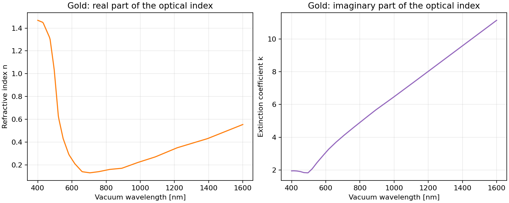

Plot gold’s refractive index and extinction coefficient in Python#
Load measured gold optical constants and plot the real refractive index and extinction coefficient separately. Use these wavelength-dependent values as inputs to material, interface, or electromagnetic calculations.


Optical constants from the Johnson and Christy gold dataset.#
Run the notebook with Runtime → Run all, or download the
notebook or
Python script to run locally.
Run locally#
python -m pip install PyOptik
python gold_optical_constants.py
The script downloads the RefractiveIndex.INFO snapshot on first use. This needs internet access; subsequent runs reuse the local cache.
Calculate and plot#
import matplotlib.pyplot as plt
import numpy as np
from TypedUnit import ureg
from PyOptik import material
# Use the documented default and keep the resolved identity visible.
gold = material("gold") # main/Au/Johnson
print("Resolved source:", gold.catalog_id)
wavelengths = np.linspace(400, 1600, 300) * ureg.nanometer
index = gold.compute_refractive_index(wavelengths, out_of_range="raise")
figure, axes = plt.subplots(1, 2, figsize=(10, 4), layout="constrained")
axes[0].plot(wavelengths.magnitude, index.real, color="tab:orange")
axes[0].set(xlabel="Vacuum wavelength [nm]", ylabel="Refractive index n",
title="Gold: real part of the optical index")
axes[1].plot(wavelengths.magnitude, index.imag, color="tab:purple")
axes[1].set(xlabel="Vacuum wavelength [nm]", ylabel="Extinction coefficient k",
title="Gold: imaginary part of the optical index")
for axis in axes:
axis.grid(alpha=0.25)
print("Dataset: main/Au/Johnson (Johnson and Christy)")
print("Optical index at 550 nm:", gold.compute_refractive_index(
550 * ureg.nanometer, out_of_range="raise"))
plt.show()
Understand the result#
PyOptik uses the convention \(\tilde n = n + i k\). The real part \(n\) describes phase propagation, while the positive extinction coefficient \(k\) describes attenuation. The intensity absorption coefficient is \(\alpha = 4\pi k/\lambda\), with vacuum wavelength \(\lambda\).
The canonical identifier main/Au/Johnson selects the Johnson and Christy
dataset explicitly. Tabulated values are interpolated between source points;
out_of_range="raise" prevents extrapolation outside the published range.
These are bulk optical constants; films can differ with fabrication and
measurement conditions. Cite the original measurement when using this data.
Try another design#
Replace main/Au/Johnson with main/Ag/Johnson to compare gold and
silver over the same wavelength range. Use gold.absorption_coefficient
to express attenuation as an inverse length.
See Physical and numerical conventions for physical conventions and Materials and catalog for source selection and provenance.